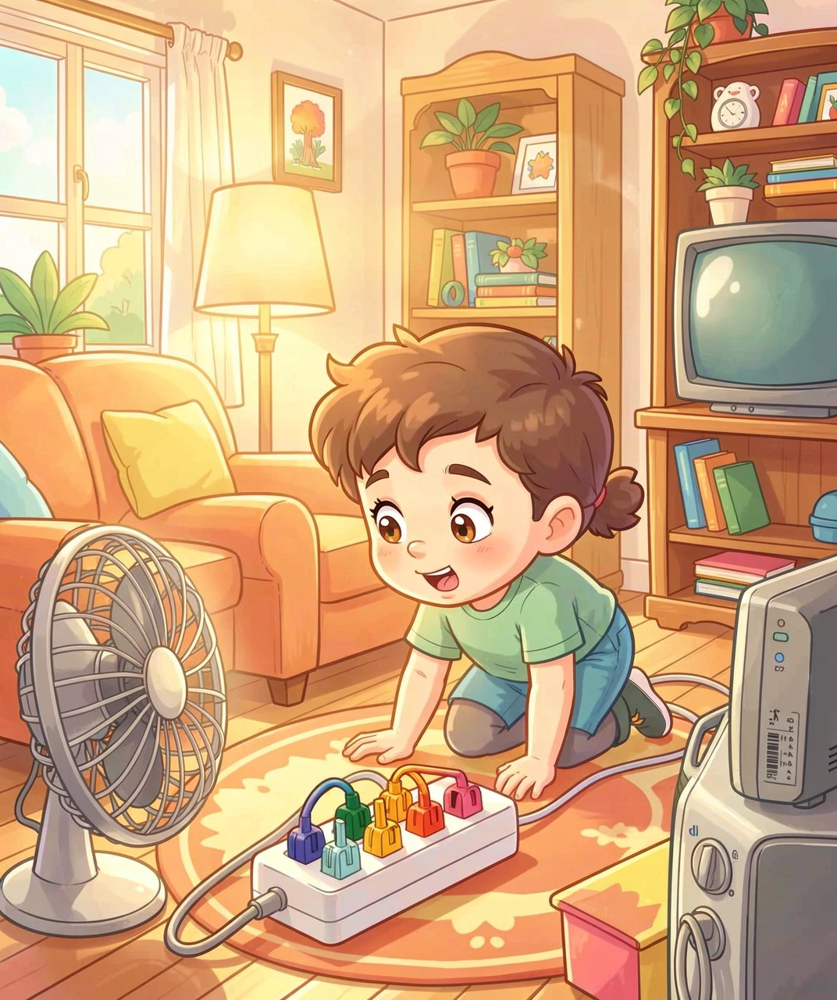
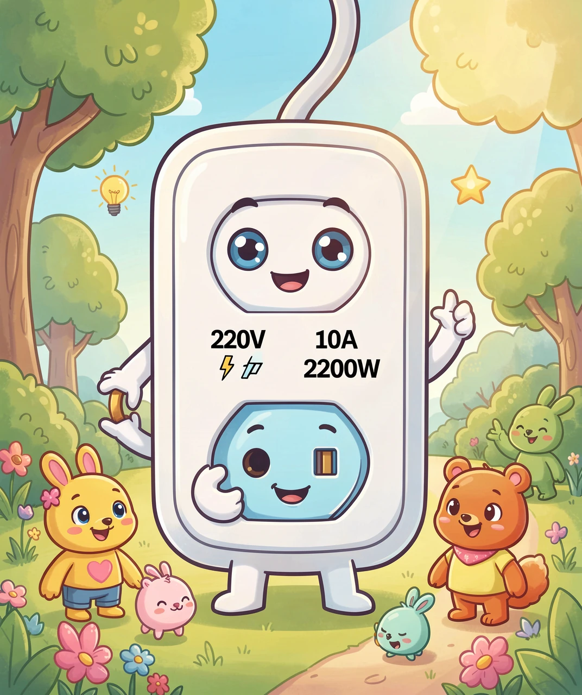
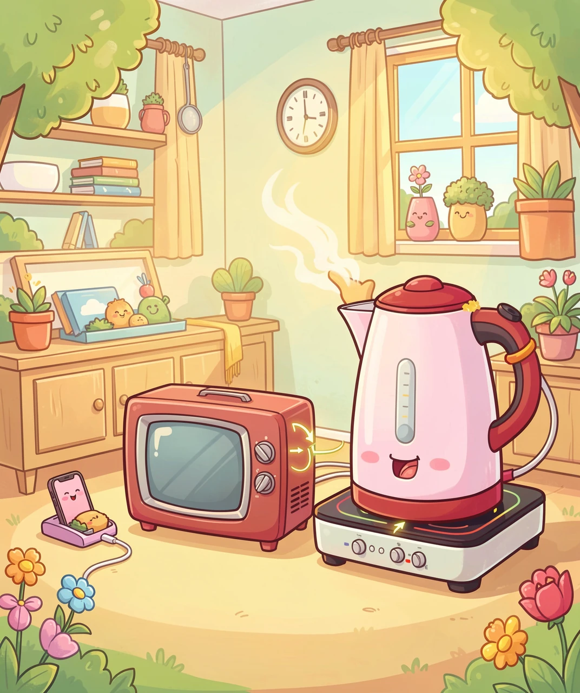
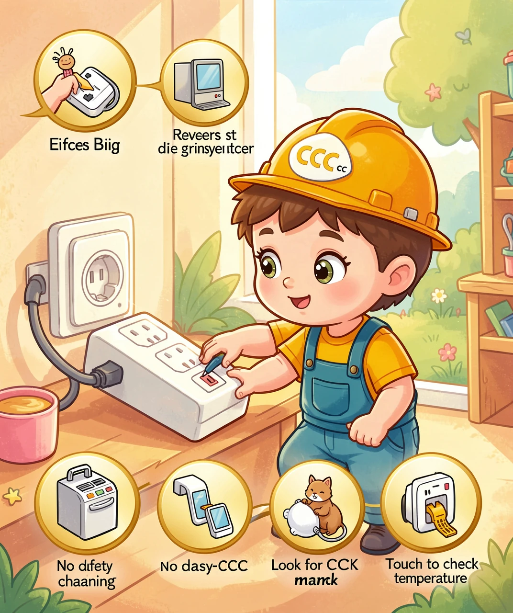
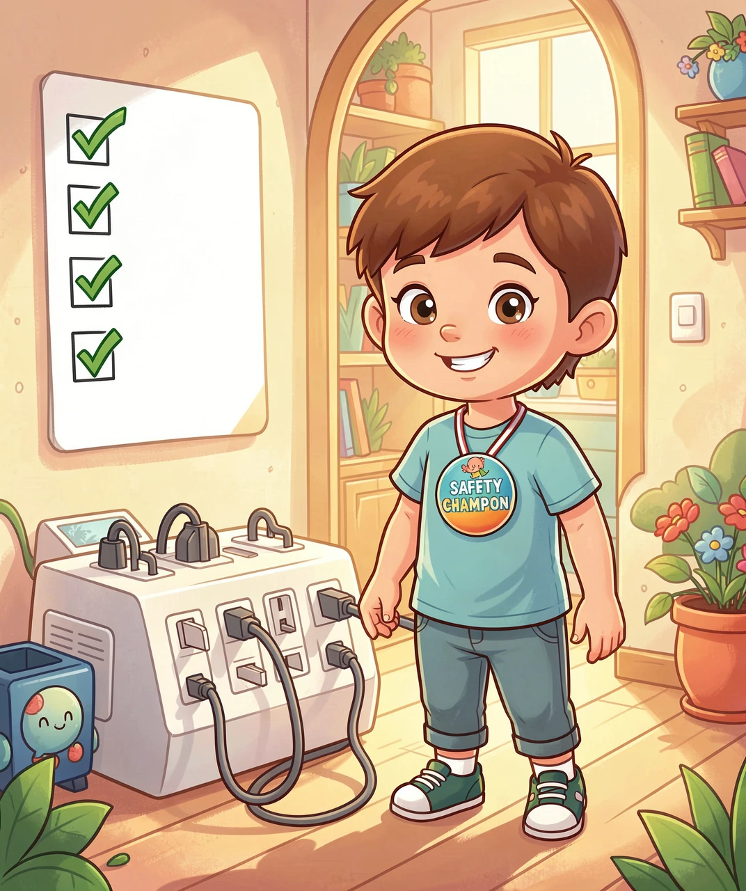

小朋友的安全用电第一课

你有没有注意过，家里墙上只有几个插座，但我们有好多电器要用电——台灯、电风扇、手机充电器、电水壶……插座不够用怎么办？这时候，拖线板就来帮忙啦！
拖线板，也叫"插排"或"排插"，它就像一个小"电力中转站"，一头插在墙上的插座里，另一头提供好几个插孔，让多个电器同时用电。
🤔你知道吗？中国每年卖出超过5亿个拖线板！几乎每个家庭都有好几个。但很多人不知道的是——拖线板不是无限供电的"魔法盒子"，它有自己承受电力的上限。
就像一个小水管，它能通过的水量是有限的。如果你同时接太多"用水大户"，水管就会受不了。拖线板也一样，接的电器太多、太"猛"，就可能过热甚至起火。

我们来认识两个重要的"电力密码"：功率（W，瓦）和电流（A，安）。
简单来说：功率就是一个电器"吃电"的速度，功率越大的电器越费电，也越"猛"。电流就是电线里流动的电的"力气"。
📐关键公式（家长可以帮忙算）：
功率（W）= 电压（V）× 电流（A）
中国家用电压是 220V。所以一个 10A 的国标拖线板，能承载的最大功率是：
220V × 10A = 2200W
国标拖线板通常分为两类：
✅10A 拖线板（最常见）：最大功率 2200W。插头是普通三脚扁插。
✅16A 拖线板：最大功率 3520W。插头比普通的大一号（大三脚），通常给空调、大功率电器专用。
记住啦：普通拖线板的上限是 2200瓦，超过就可能出危险！

每个电器都有自己"吃电"的量。我们来看看常见电器的功率：
🔍常见电器功率一览表
🪥 手机充电器：5W~65W（快充）—— 很小的"小吃货"
💡 LED台灯：5W~15W —— 小饭量
📺 电视机：80W~150W —— 中等饭量
🧊 电冰箱：100W~200W —— 时不时吃一口
🔥 电水壶：1500W~2000W —— 超大饭量！
🍲 电磁炉：1800W~2200W —— 超级大胃王！
🌬️ 电暖器/暖风机：1500W~2200W —— 也是大胃王！
现在来做一道算术题：假设你的拖线板上限是2200W，你同时插了电水壶（1800W）+ 电磁炉（2000W）= 3800W。已经远远超过上限了！
⚠️危险信号：一个 2200W 的拖线板，单独插一个电磁炉（2000W）就已经接近极限了，几乎不能再加别的大电器。如果硬要再加一个电水壶，拖线板内部的电线就会发烫、融化绝缘层、引发火灾！

记住下面四条规则，你就是家里的"安全用电小卫士"！
🥇规则一：大功率电器独立用插座
空调、电暖器、电磁炉、电水壶、微波炉——这些"吃电大胃王"不要插在同一个拖线板上。最好直接插在墙上的专用插座。
🥈规则二：不要"拖线板接拖线板"
一个拖线板上再插另一个拖线板，这叫"串联"。每多一级串联，电阻变大、发热加重、安全系数降低。最危险的情况是——一串连了好几个拖线板！
🥉规则三：看插头！买国标认证的拖线板
正规国标拖线板有CCC认证标志（中国强制性产品认证），有过载保护按钮，插头是三脚带接地的。三无产品没有安全保护，超负荷也不会自动断电，非常危险！
🏅规则四：用手摸一摸，检查温度
拖线板正常使用应该是凉的或微温的。如果摸上去明显发热甚至烫手，说明负荷太大了！立刻拔掉一些电器的插头，让拖线板"降温"。

现在你已经知道了——一个国标拖线板最多能带2200W的电，大功率电器不能挤在一起用。这不仅是知识，更是保护自己和家人的安全技能。
下次在家里，你可以帮爸爸妈妈检查：
✅ 拖线板上有 CCC 标志吗？
✅ 大功率电器是不是单独用插座？
✅ 有没有拖线板接拖线板的"串联"？
✅ 摸一摸拖线板，是凉的吗？
🌟聪明的小朋友会问："为什么不能用更粗的电线让拖线板带更多电呢？"
好问题！其实更大的拖线板（16A，3520W）确实用了更粗的铜线。但家里的墙上插座和墙里的电线也有上限。如果拖线板能承受3500W，但墙里的线路只能承受2200W，那墙里的线就会先过载发热。所以——整条电路的最薄弱环节，决定了安全上限！
安全用电，从认识拖线板开始。你学会了吗？😊
⚡ 拖线板的"能力"用功率（瓦 W）来衡量。
📏 国标 10A 拖线板最大承载 2200W（220V × 10A）。
🔥 大功率电器（电水壶/电磁炉/暖风机）一个就能逼近上限。
🔗 拖线板串联使用非常危险，电阻增大、发热加重。
🛡️ 正规拖线板必须有 CCC 认证和过载保护。
🌡️ 拖线板发热烫手 = 超负荷警报，立刻拔插头。
🏠 安全上限取决于整条电路中最薄弱的一环。
1. 一个普通国标拖线板（10A）最多能带多少瓦的电？
2. 以下哪个电器是"吃电大胃王"，功率最大？
3. "拖线板接拖线板再接拖线板"这种做法叫什么？
4. 正规国标拖线板必须有哪个标志？
5. 发现拖线板明显发烫，应该怎么办？